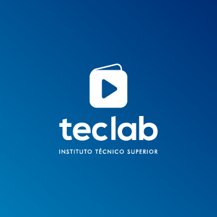
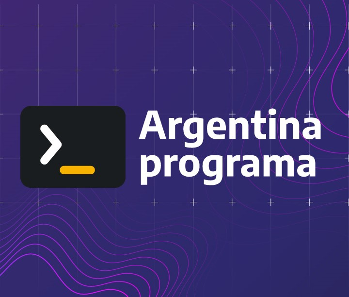

Educación

Teclab Instituto Técnico superior
Tecnicatura superior en Programación
- Desarrollo de software sobre plataformas web en HTML, CSS y Javascript.
- Configurar e implementar bases de datos utilizando SQL y Oracle.
- Programar en dispositivos móviles: JAVA y desarrollos para Android. Software
development kit (SDK). Android Studio y Android virtual device (AVD)
- Crear apps con Material Design y Responsive Design

Argentina Programa
#SéProgramar
- Fundamentos de la programación:
variables, operadores, estructuras de control de flujo, funciones, etc. Al aprender estos
conceptos,
pude entender cómo funcionan los programas y cómo construir los míos.
- Programación Imperativa:
Al aprender programación imperativa, con Javascript, comprendí cómo escribir programas que
modifiquen
el estado de una
aplicación y cómo controlar el flujo de un programa.
- Programacióon Orientada a Objetos:
Utilizando el lenguaje Ruby, aprendí cómo crear y utilizar objetos en los programas y cómo
diseñar aplicaciones orientadas a objetos.